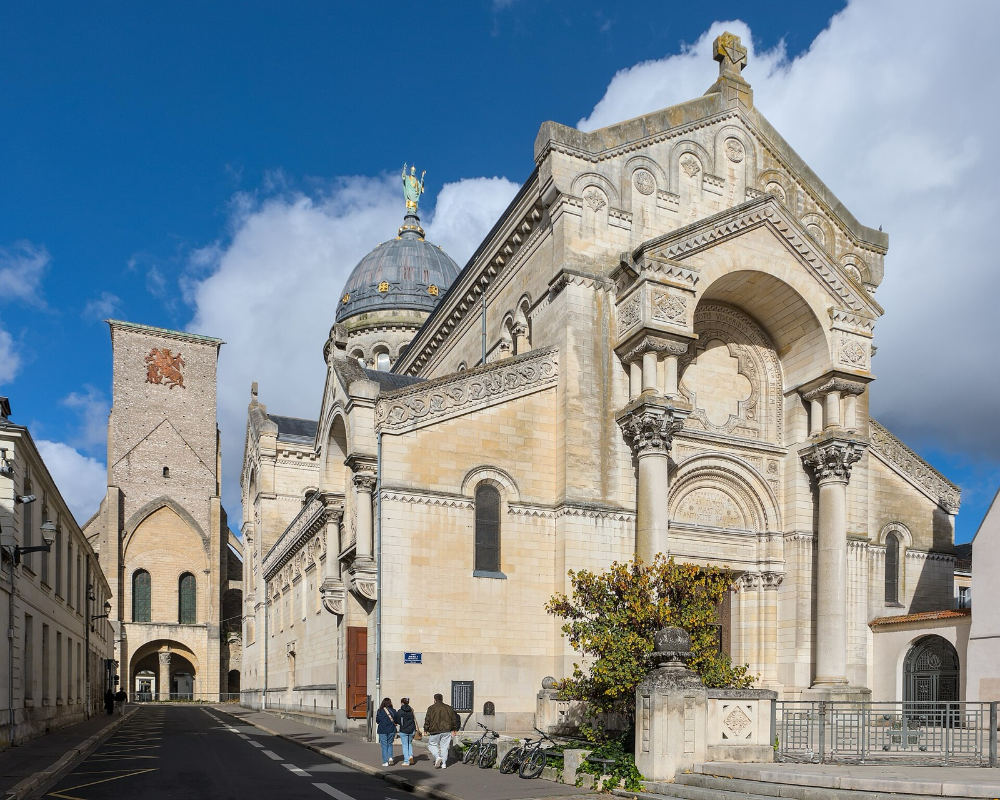
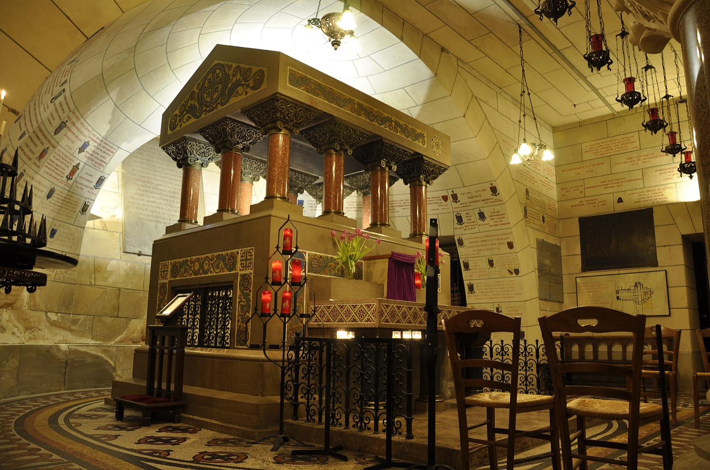
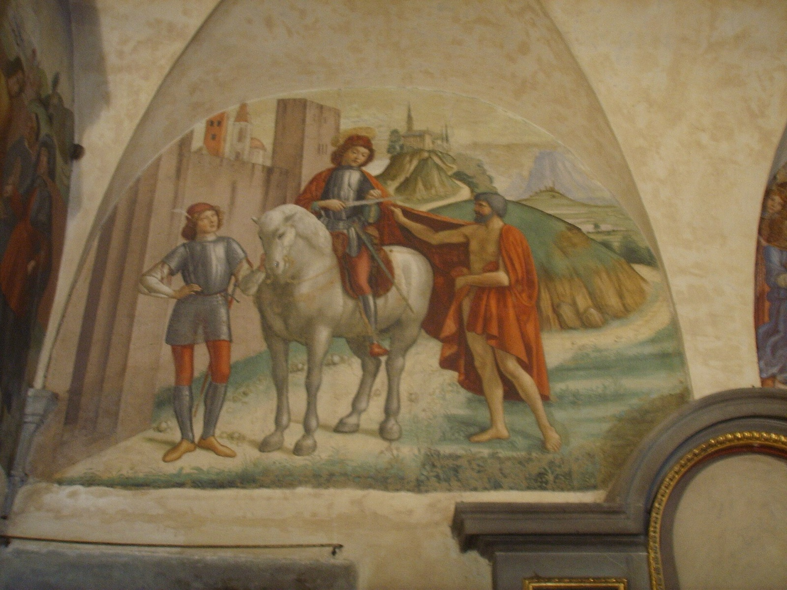
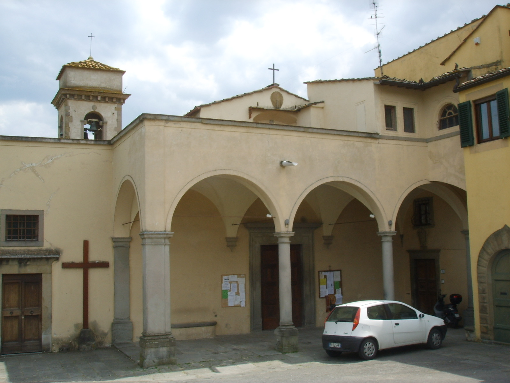
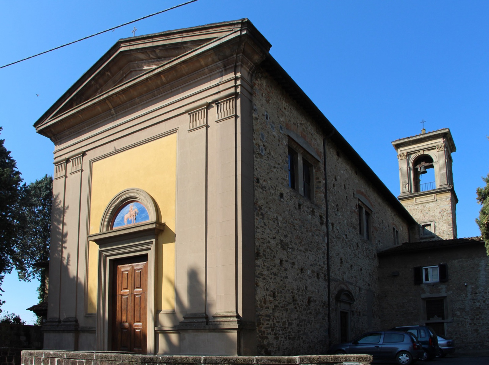
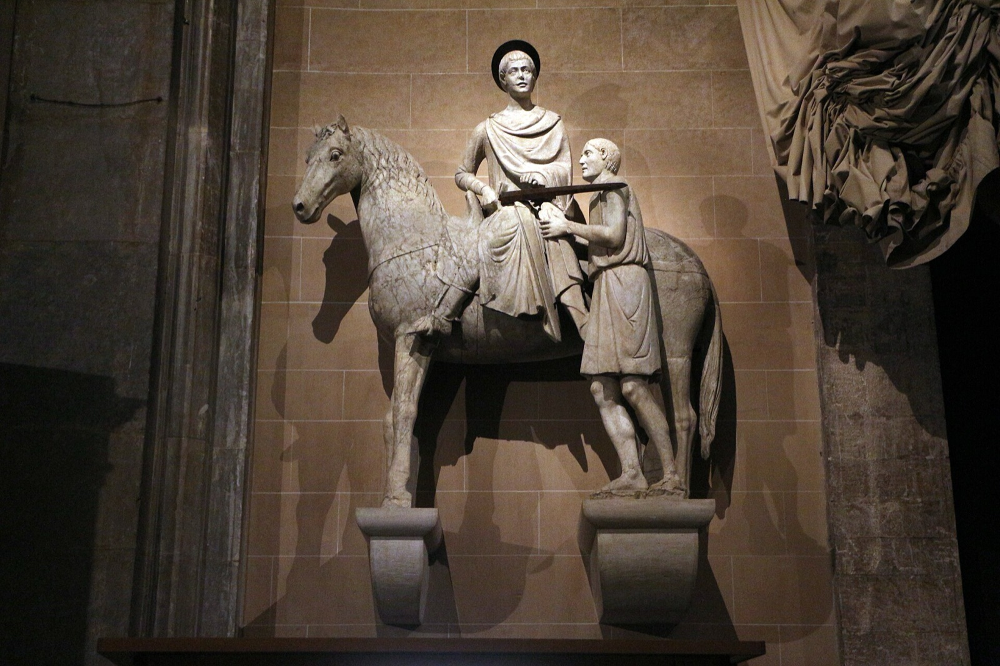

Tours, la tomba
Sul sepolcro di Martino, in un cimitero fuori le mura di Tours, sorse presto una cappella e poi, verso il 470, la grande basilica voluta dal vescovo Perpetuo. Per tutto il Medioevo fu uno dei maggiori santuari della cristianità: vi venne Clodoveo, re dei Franchi, dopo la vittoria sui Visigoti; vi fu abate Alcuino, il maestro di Carlo Magno; i pellegrini diretti a Santiago di Compostela vi facevano tappa lungo la via che ancora si chiama via Turonensis.

La basilica romanica, ricostruita più volte, era fra le più grandi chiese di Francia. Nel 1562, durante le guerre di religione, fu saccheggiata dagli ugonotti e le reliquie in gran parte bruciate. Dopo la Rivoluzione, ridotta a scuderia e pericolante, venne demolita: ne restano due torri, la Torre Carlo Magno e la Torre dell'Orologio. Nel 1860 gli scavi ritrovarono il luogo della tomba, e fra il 1886 e il 1924 l'architetto Victor Laloux vi costruì sopra la basilica attuale, consacrata nel 1925. Sulla cupola una statua di bronzo del santo benedice la città.

Sulle strade di Martino
- Szombathely (Ungheria). L'antica Sabaria, dove Martino nacque. Da qui parte la Via Sancti Martini, l'itinerario culturale europeo che ne segue i passi fino a Tours.
- Pavia. La Ticinum della sua infanzia, dove chiese di diventare catecumeno.
- Amiens (Francia). La città del mantello.
- Isola Gallinara (Albenga). Lo scoglio ligure dove visse da eremita.
- Ligugé (Francia). Il primo monastero, presso Poitiers: dopo molte interruzioni vi abita ancora oggi una comunità benedettina.
- Marmoutier (Tours). Il «grande monastero» sulla Loira, divenuto una delle più potenti abbazie di Francia; ne restano il portale e le grotte dei primi monaci.
- Candes-Saint-Martin (Francia). Il villaggio dove morì, alla confluenza della Vienne con la Loira, con la collegiata costruita sul luogo della sua cella.
In Italia
In Italia le chiese dedicate a san Martino sono più di novecento, e non si contano i paesi che ne portano il nome. Sono intitolate a lui le cattedrali di Lucca e di Belluno; ad Assisi la cappella affrescata da Simone Martini; a Napoli la grande certosa che domina la città dal Vomero. Molte di queste dedicazioni risalgono all'alto Medioevo, quando Longobardi e Franchi, che veneravano Martino come loro protettore, ne portarono il culto lungo le strade della penisola.
A Firenze
L'Oratorio dei Buonomini di San Martino
Nel cuore della città, a due passi dalla casa di Dante, la piazzetta di San Martino prende nome dall'antica chiesa di San Martino al Vescovo, che fu la parrocchia degli Alighieri. Qui nel 1442 il priore di San Marco, frate Antonino Pierozzi, poi arcivescovo e santo, riunì dodici cittadini perché soccorressero i «poveri vergognosi»: le famiglie cadute in miseria che per dignità non chiedevano l'elemosina. I Buonomini portavano l'aiuto di nascosto, senza tenere nulla per la confraternita; quando la cassa era vuota accendevano un lume alla porta, e i fiorentini capivano. Di lì, si dice, viene l'espressione «essere ridotti al lumicino». La Congregazione esiste ancora e lavora allo stesso modo.

Le lunette dell'oratorio, dipinte dalla bottega di Domenico Ghirlandaio, raffigurano due storie di san Martino e le opere di misericordia compiute dai Buonomini nella Firenze del Quattrocento.
San Martino a Mensola
Ai piedi delle colline di Settignano, sul torrente Mensola, è una delle chiese più antiche dei dintorni, legata alla memoria del santo irlandese Andrea, che l'avrebbe fondata nel IX secolo. Rinnovata nel Quattrocento, conserva un trittico di Taddeo Gaddi e tavole di Neri di Bicci.

San Martino a Montughi
Sulle prime colline a nord della città, in via di Montughi, la strada che sale a immettersi nella via Bolognese. Oggi la chiesa fa parte dell'unica parrocchia denominata «Immacolata e San Martino a Montughi».

Le altre chiese della città
- San Martino a Brozzi. Nell'antico borgo della piana, a ovest della città.
- San Martino della Scala. In via della Scala: la chiesa dell'antico ospedale dei trovatelli, poi monastero.
Nei dintorni e in Toscana
- Pieve di San Martino a Sesto Fiorentino. La chiesa romanica nel centro della città, di cui Martino è patrono; conserva una croce dipinta attribuita ad Agnolo Gaddi.
- San Martino a Gangalandi (Lastra a Signa). Ne fu rettore Leon Battista Alberti, che disegnò l'abside rinascimentale.
- San Martino in Campo (Capraia e Limite). Antica abbazia sulle colline del Montalbano.
- Cattedrale di San Martino a Lucca. Custodisce il Volto Santo, il monumento a Ilaria del Carretto di Jacopo della Quercia e la scultura duecentesca del santo con il povero.
